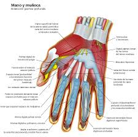

Alumno: Braulio Neftali Sandoval Reyes
Carnet:25-1250-2019
EL tacto
la guia de quien no puede ver
Los nervios y articulaciones que conforman una mano
forman el tacto

Cuidar bien las manos es lo que queda